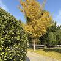
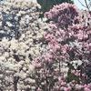
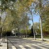

当第一缕春风拂过校园的树梢，整个世界便被染上了鲜活的春意。清晨的薄雾还未完全散去，阳光透过嫩绿的梧桐叶缝隙，在地面洒下斑驳的光影，像是大自然亲手绘制的油画。主干道两旁的樱花树是校园里最亮眼的风景，粉白的花瓣层层叠叠，风一吹，便有无数片花瓣打着旋儿飘落，铺成一条粉色的长廊，踩上去软乎乎的，像是春天在耳边轻声絮语。湖边的垂柳抽出了新芽，枝条变得柔软而轻盈，柳叶泛着淡淡的嫩绿，倒映在澄澈的湖水中，让整个湖面都变得灵动起来。偶尔有几只燕子掠过水面，激起一圈圈涟漪，打破了湖面的宁静，却又为这春日增添了几分生机。午后的阳光最是惬意，坐在湖边的长椅上，晒着暖洋洋的太阳，看着远处的教学楼在春光里静静伫立，耳边是风吹树叶的声音，鼻尖是桃花淡淡的甜香，所有的疲惫都在这一刻烟消云散。
校园里的每一处角落都藏着春天的惊喜，操场边的迎春花开得灿烂，像是一串串金色的小铃铛，为清新的春日添了几分活泼；图书馆前的玉兰开得正盛，白的、紫的，在春风中傲然挺立，散发着清雅的香气；就连路边的小草，也从泥土里探出嫩绿的脑袋，在风中轻轻摇曳，诉说着春日的故事。漫步在校园里，每一步都像是踩在诗行里，每一眼都是一幅绝美的春景图，让人忍不住沉醉其中，不愿离去。春日的校园，是一首流动的诗，是一幅立体的画，用温柔的春风、澄澈的蓝天、温暖的阳光，治愈着每一个在这里求学的学子。


